← Back to BIM + Digital
Retail Federation + Commercial Control
Souq Galleria Mall
Turn a retail destination into a coordinated delivery system.
The mall is treated as a network of atrium, skylight, retail fronts, tenant interfaces, back-of-house, MEP zones and public realm — all visible through BIM, 4D sequencing and 5D cost intelligence.
The BIM Story
Retail complexity becomes manageable when packages, time and cost speak the same model language.
The digital journey links federated coordination with atrium-first sequencing, site logistics, tenant fit-out readiness, procurement packages and owner-facing cost dashboards.
Federated BIMAtrium SequencingRetail PhasingTenant Readiness5D Cost PackagesProcurement Visibility
Curated Digital Portfolio
Souq Galleria Mall
A cinematic sequence of coordinated models, digital construction thinking and project-specific BIM intelligence.
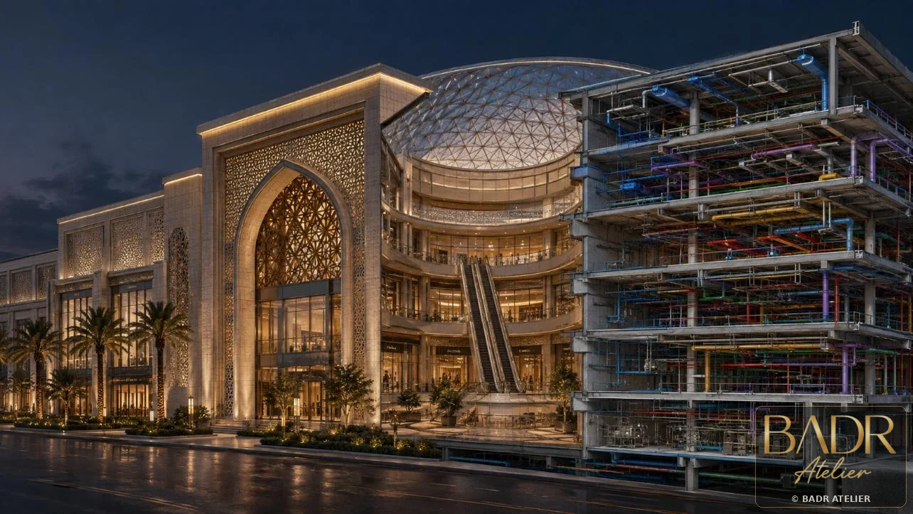
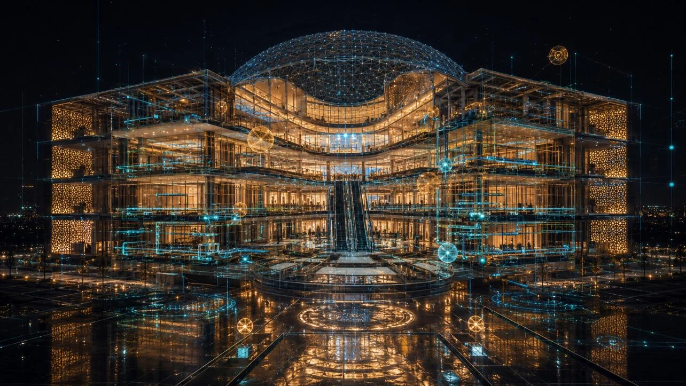
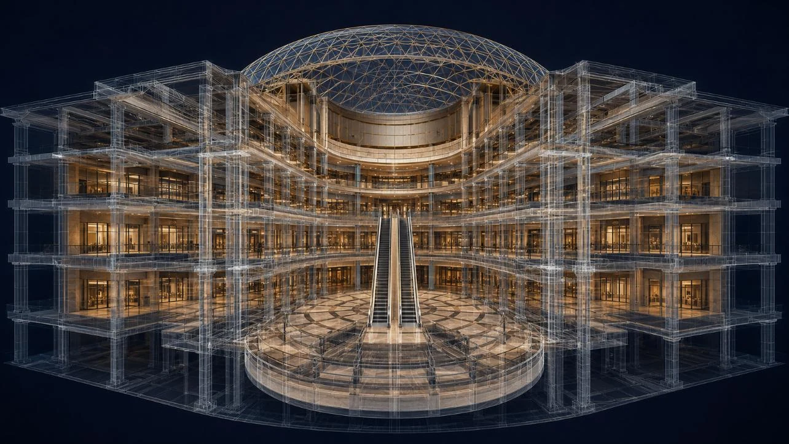
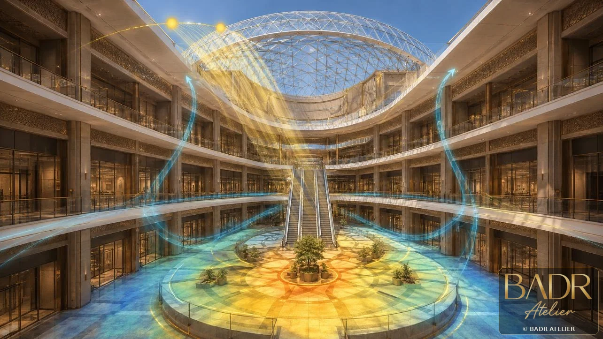
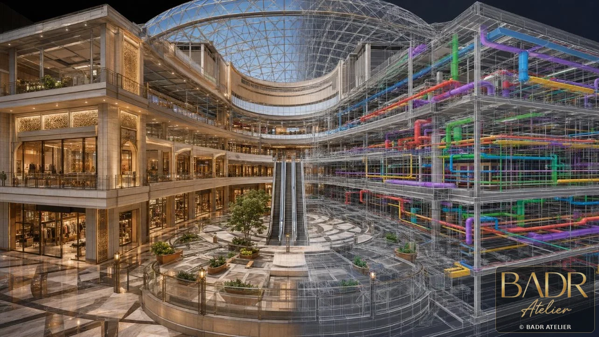
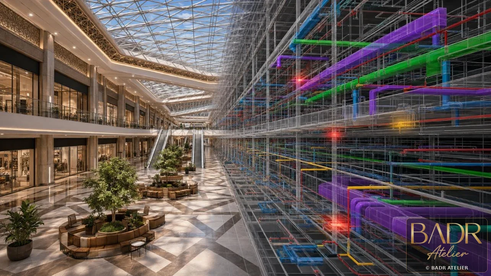
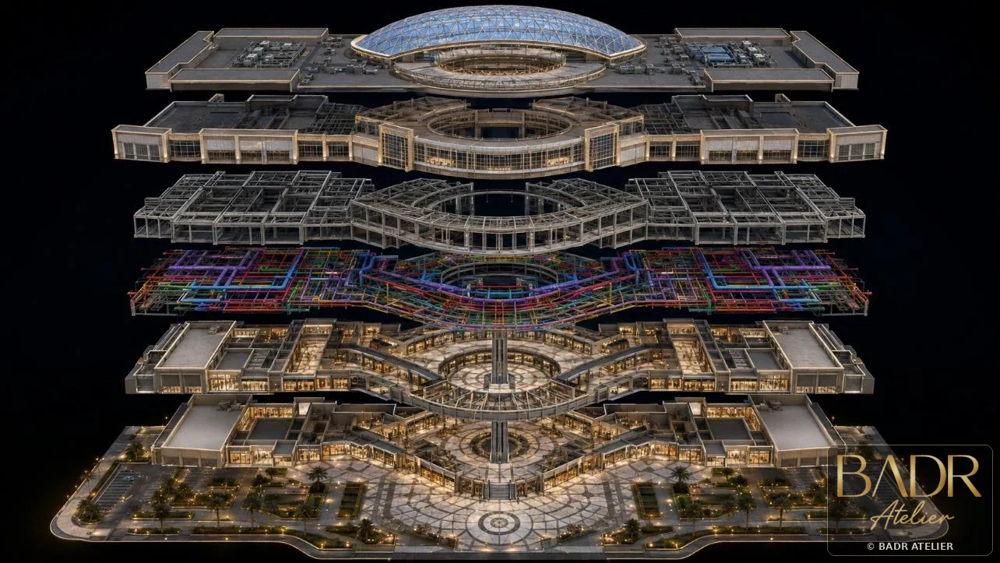
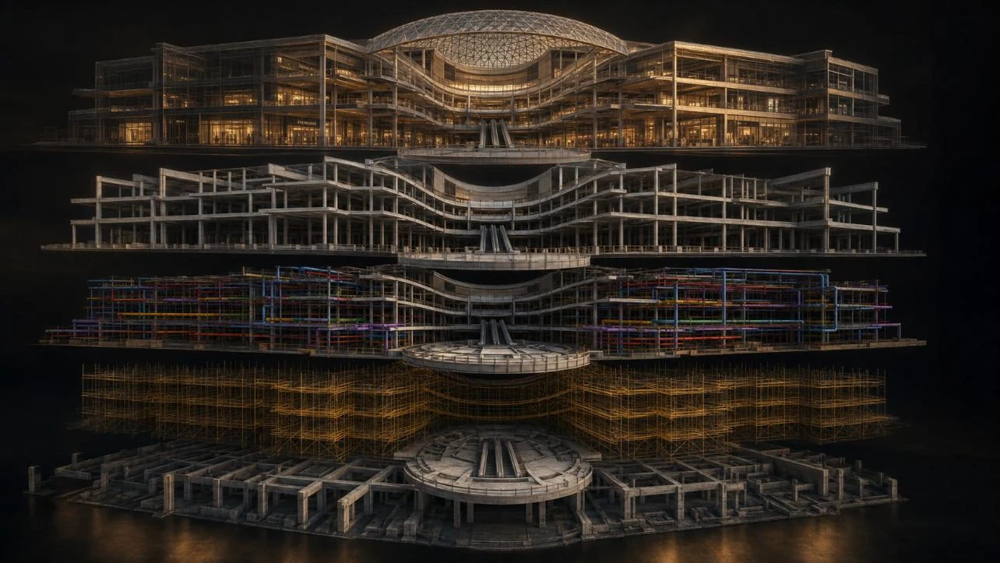
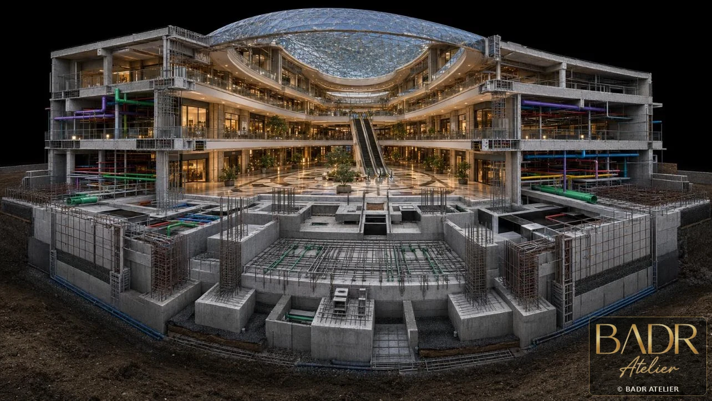
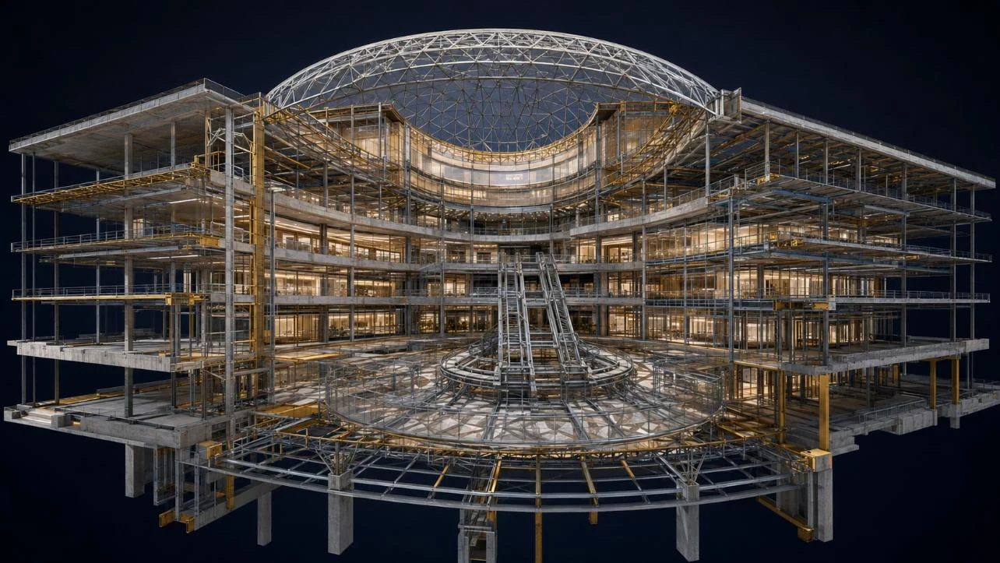
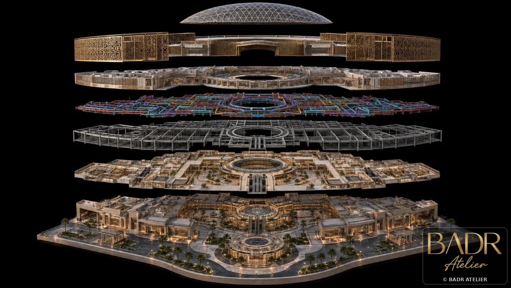

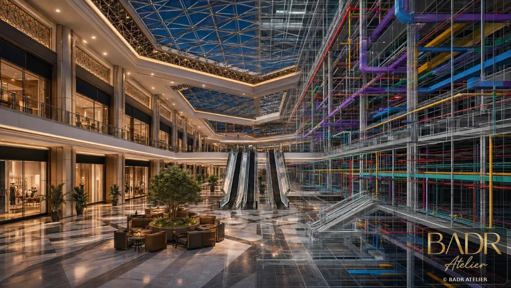
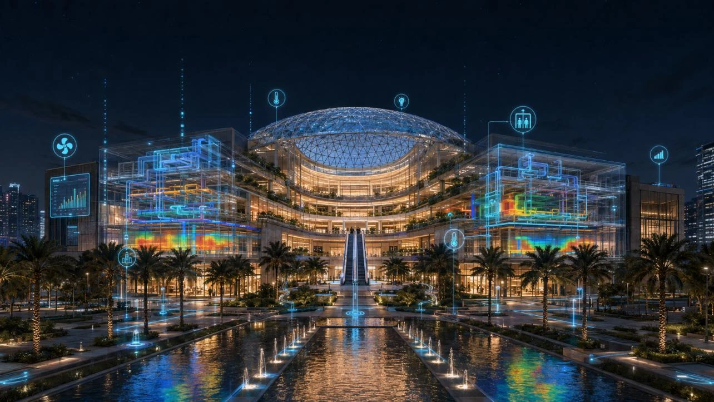